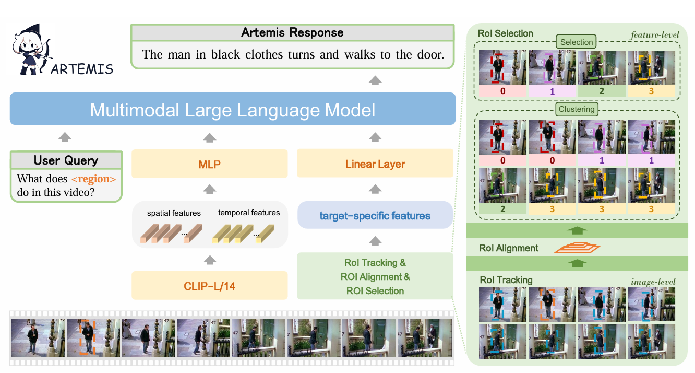
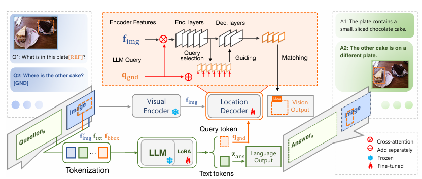

Xi TangPh.D. candidateRoom 330, Academy 2 Building
|
|
Biography
I am a Ph.D. candidate of LAMP (Learning And Machine Perception) in the School of Advanced Interdisciplinary Sciences, University of Chinese Academy of Sciences , advised by Prof. Jianbin Jiao . I got a B.E. degree in University of Chinese Academy of Sciences, Beijing in June 2023.
My research interests include computer vision and deep learning, specifically for multimodal learning, reinforcement learning.
Publications
 |
Xi Tang*, Jihao Qiu*, Lingxi Xie, Yunjie Tian, Jianbin Jiao and Qixiang Ye
Adaptive Keyframe Sampling for Long Video Understanding Proceedings of the European Conference on Computer Vision, 2025 [Paper] [Code] |
 |
Jihao Qiu*, Yuan Zhang*, Xi Tang*, Lingxi Xie, Tianren Ma, Pengyu Yan, David Doermann, Qixiang Ye and Yunjie Tian
Artemis: Towards Referential Understanding in Complex Videos Advances in Neural Information Processing Systems, 2024 [Paper] [Code] |
 |
Yunjie Tian*, Tianren Ma* , Lingxi Xie, Jihao Qiu, Xi Tang, Yuan Zhang, Jianbin Jiao, Qi Tian and Qixiang Ye
ChatterBox: Multi-round Multimodal Referring and Grounding [Paper] [Code] |